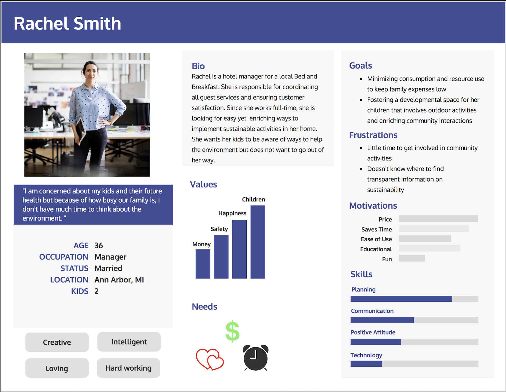
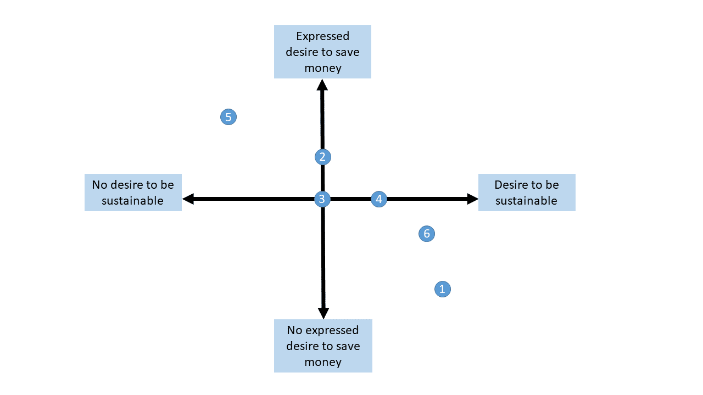
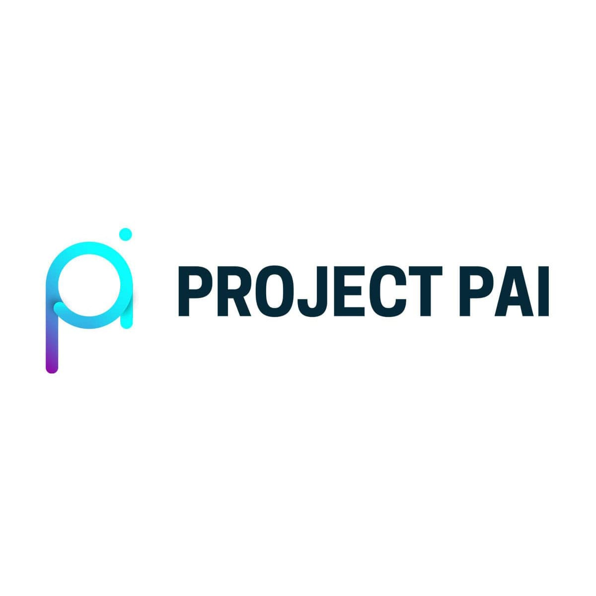

Processed and organized on average per day, 70-100 guest departures and arrivals, while providing detailed information about the 500 acre resort and surrounding area. Reconciled guest complaints by actively maintaining correspondence between 11 different departments in a professional manner. Managed multiple systems such as RDP, Saflok, Abacus, and ID Verify while facilitating over 100 guest transactions per day. Researched and contacted small businesses throughout the Midwest to contribute to marketing research. Organized excel sheets according to requested contacts via the Sleeping Bear Dunes National Lakeshore registry.
Student researcher in three-week UM Citizen Interaction Design Program. Learned about sustainability issues for families with young children in Ann Arbor through a technology lens. Collected user data, identified user needs, and converted those needs into design elements that contributed toward an information solution. The end of the program consisted of a Powerpoint presentation displaying different solutions to the City of Ann Arbor as well as a submitted final report.
 Completed weekly evaluations on the app’s functions and features. Coordinated promotional events to increase brand awareness on the University of Michigan campus. Created and developed over 15 unique social media posts for Facebook, Instagram and Snapchat to promote. Successfully increased social media followers and app users.
Volunteered remotely to influence obEN’s new Personal Artificial Intelligence (PAI) project. Tested different apps and features and posted about the company on various social media platforms to spread the word to fellow students, family, and friends
